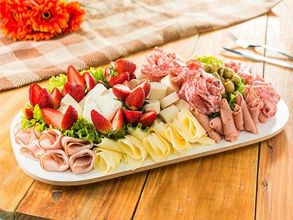

|
Somos uma padaria artesanal criada em 1976, comprometida em criar pães deliciosos e bolos irresistíveis. Com anos de tradição, nossa padaria é o lugar perfeito para você encontrar o melhor em pães frescos e confeitaria. Na Trigo & Sabor, nossa visão é ir além do que se espera de uma padaria de bairro. Queremos ser um centro de inovação, educação e conexão na comunidade, acreditando que a comida é uma forma de arte e expressão que transforma vidas e fortalece comunidades. Oferecemos experiências sensoriais únicas e educação sobre alimentos, colaboramos com produtores locais, apoiamos a reintegração social por meio de empregos e treinamento, e promovemos a inovação constante. Além disso, nosso serviço de assinatura exclusivo, o "Clube do Trigo & Sabor", cria uma comunidade de entusiastas da culinária. Na Trigo & Sabor, estamos comprometidos em transcender o papel tradicional de uma padaria, tornando-se um local que inspira, educa e conecta a comunidade por meio da paixão pela comida. Junte-se a nós nesta missão e descubra a diferença que uma padaria pode fazer em sua vida e na sua comunidade. |
Nossos Produtos
- Pães frescos diariamente
- Bolos caseiros
- Pastéis e salgados
- Café e chá quentinho
 |
||
 |
 |
Tabela de Produtos
| Produto | Preço |
|---|---|
| Pão de forma | R$ 7.50 |
| Bolo de chocolate | R$ 20.00 |
| Pastel de carne | R$ 5.00 |
| Café expresso | R$ 5.50 |
Horário de Funcionamento
Segunda a Sexta: 6:30 AM - 7:00 PM
Sábado e Domingo: 7:00 AM - 5:00 PM
Contato
Tire suas dúvidas, faça pedidos ou envie-nos comentários através do nosso formulário de contato.
Tel: (00)0000-0000
Localização
Estamos localizados na Rua da Padaria, 123 - Bairro Feliz